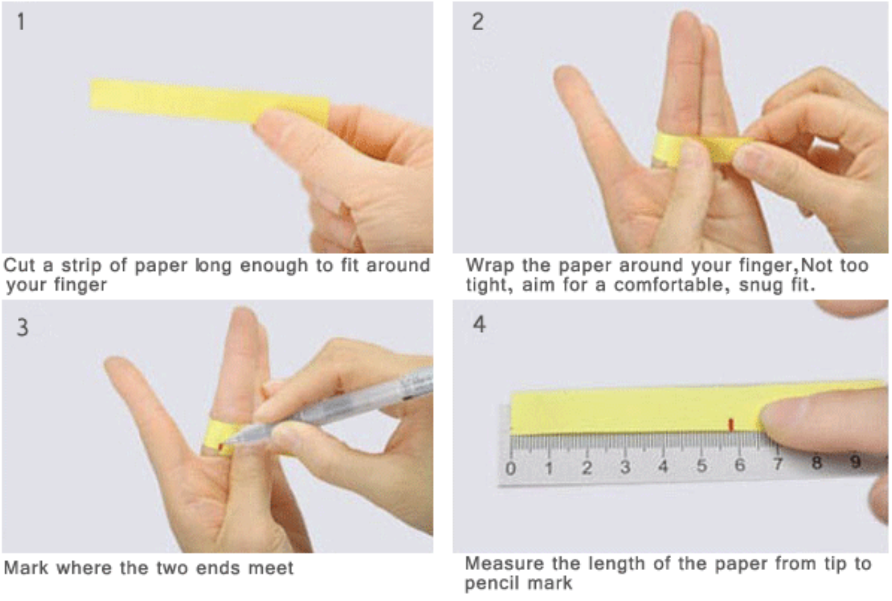
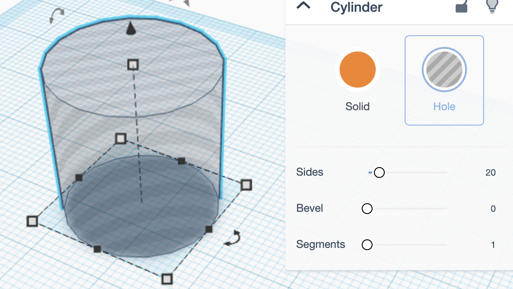
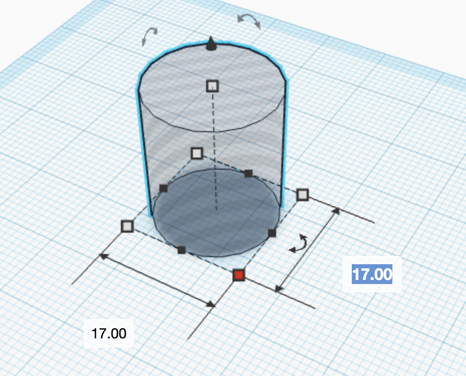
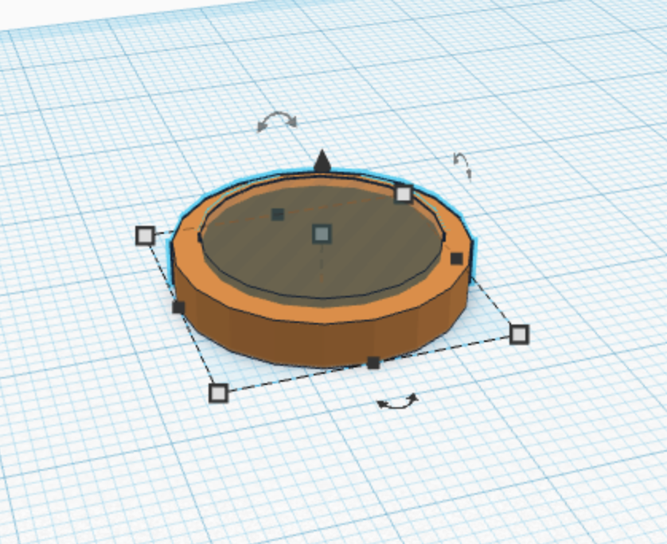
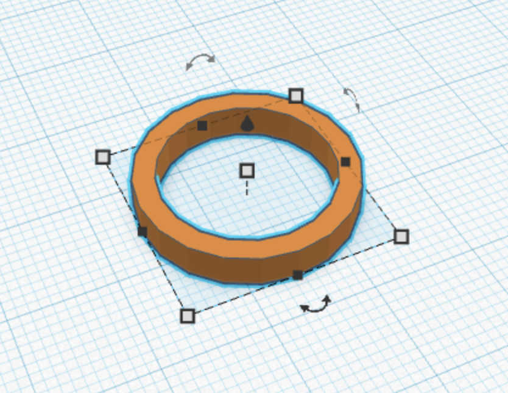
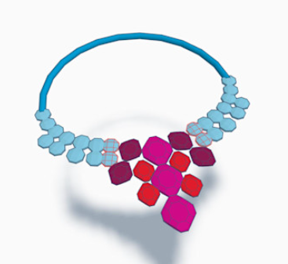

⬡ 3D Modeling • Lesson 3 ⬡
💍 Design a ring that fits
Use your measurements to build a ring and check that it can be printed.
🧠 Vocab / Vocabulario
3D Printing: Turning a digital model into a real object by stacking layers of melted plastic / Convertir un modelo digital en un objeto real apilando capas de plástico derretido
Slice: Telling the printer how to build your object layer by layer / Indicarle a la impresora cómo construir tu objeto capa por capa
You built a 3D coin. Now design a ring in Tinkercad and prepare it for printing.
Watch: What is 3D Printing?
Watch: 3D Printing Best Practices
🚨 3 Rules for a Successful Print:
1️⃣ Flat base: your design needs a flat bottom
2️⃣ Avoid unsupported overhangs. Ask your teacher to check parts that stick out.
3️⃣ Iterate: every failed print teaches you something
📏 Measure Your Finger
✂️ Cut a strip of paper. Wrap it around your finger. Mark where it meets.
📏 Measure the paper to the mark in centimeters (cm).
🔄 Multiply by 10 to convert to millimeters (mm). (Ex: 4.93 cm × 10 = 49.3 mm)
➗ Divide by 3.14 = your ring diameter. (Ex: 49.3 ÷ 3.14 = 15.7 mm)

Practice Ring Designs
Open the Tinkercad class. Enter the class code your teacher provides. Choose Google and use your school account.
📚 Open the "Ring" activity in our class, or go to Learn → "3D Print Your Own Ring" → complete all 3 lessons (basic, diamond, heart)
Keep each practice ring as a named design. Return to your dashboard to check that it saved before starting the next one.
💍 Design Your Custom Ring
Build your own ring from scratch. Follow these steps:
A. Add a cylinder and choose Hole. Set its width and length to your finger diameter.

B. Add a solid cylinder. Set its width and length 4 mm larger than the hole. This leaves a 2 mm wall on each side.

C. Set both cylinders to 4 mm high. Use Align to center them in both horizontal directions.

D. Select both and choose Group to cut the opening. Then add your details.

💡 Remember the 3 rules: flat base, no overhangs, and iterate.
📤 Export & Submit
Select your complete custom ring. Click Export, then .STL.
Open Downloads. Rename the file LastName-FirstName-ring.stl (example: Garcia-Ana-ring.stl). Keep the .stl ending.
Upload the STL to this Canvas assignment. Add your existing reflection in submission comments.
STL holds your 3D shape for print preparation. Keep your editable ring in Tinkercad. Changing a PNG filename does not convert it to STL.
For printing: keep the model in your Tinkercad class. Your teacher checks it and handles the print queue.
💬 Reflect
Write 2–3 sentences in submission comments. Start with:
"If my ring didn't print correctly, the first thing I would check is ___ because..."
Words to help / Palabras de apoyo
flat base = base planaoverhang = voladizosize = tamañolayers = capasdiameter = diámetrosupport = soporteiterate = probar y mejorarslice = preparar las capas para imprimir
⬆️ Level Up
Done early? Design a necklace pendant. Follow the "Create a Fancy Necklace" tutorial.

✅ Done?
STL uploaded + reflection in comments = complete
Construiste una moneda 3D. Ahora diseña un anillo en Tinkercad y prepáralo para imprimir.
Mira: ¿Qué es la impresión 3D?
Mira: Mejores prácticas para impresión 3D
🚨 3 Reglas para una impresión exitosa:
1️⃣ Base plana: tu diseño necesita un fondo plano
2️⃣ Evita partes salientes sin soporte. Pide a tu maestro/a que las revise.
3️⃣ Itera: cada impresión fallida te enseña algo
📏 Mide tu dedo
✂️ Corta una tira de papel. Enróllala en tu dedo. Marca donde se junta.
📏 Mide el papel hasta la marca en centímetros (cm).
🔄 Multiplica por 10 para convertir a milímetros (mm). (Ej: 4.93 cm × 10 = 49.3 mm)
➗ Divide entre 3.14 = diámetro de tu anillo. (Ej: 49.3 ÷ 3.14 = 15.7 mm)
Practica diseños de anillos
Abre la clase de Tinkercad. Introduce el código que te da tu maestro/a. Elige Google y usa tu cuenta escolar.
📚 Abre la actividad "Ring" en nuestra clase, o ve a Learn → "3D Print Your Own Ring" → completa las 3 lecciones (básico, diamante, corazón)
Guarda cada anillo de práctica con un nombre. Vuelve al panel y comprueba que se guardó antes de empezar el siguiente.
💍 Diseña tu anillo personalizado
Construye tu propio anillo desde cero. Sigue estos pasos:
A. Añade un cilindro y elige Hole. Pon su ancho y largo al diámetro de tu dedo.
B. Añade un cilindro sólido. Haz su ancho y largo 4 mm mayores que el hueco. Quedará una pared de 2 mm por lado.
C. Pon ambos cilindros a 4 mm de altura. Usa Align para centrarlos en ambas direcciones horizontales.
D. Selecciona ambos y elige Group para cortar la abertura. Después añade detalles.
💡 Recuerda las 3 reglas: base plana, sin voladizos, e itera.
📤 Exporta y envía
Selecciona tu anillo personalizado completo. Haz clic en Export y luego en .STL.
Abre Descargas. Cambia el nombre a Apellido-Nombre-ring.stl (ejemplo: Garcia-Ana-ring.stl). Conserva la extensión .stl.
Sube el STL a esta tarea de Canvas. Agrega tu reflexión en los comentarios del envío.
STL guarda la forma 3D para preparar la impresión. Conserva el anillo editable en Tinkercad. Cambiar el nombre de un PNG no lo convierte en STL.
Para imprimir: guarda el modelo en tu clase de Tinkercad. Tu maestro/a lo revisará y organizará la impresión.
💬 Reflexión
Escribe 2–3 oraciones en los comentarios del envío. Empieza con:
"Si mi anillo no se imprimiera correctamente, lo primero que revisaría es ___ porque..."
Words to help / Palabras de apoyo
flat base = base planaoverhang = voladizosize = tamañolayers = capasdiameter = diámetrosupport = soporteiterate = probar y mejorarslice = preparar las capas para imprimir
⬆️ Sube de Nivel
¿Terminaste? Diseña un dije para collar. Sigue el tutorial "Create a Fancy Necklace".
✅ ¿Listo?
STL subido + reflexión en comentarios = completo